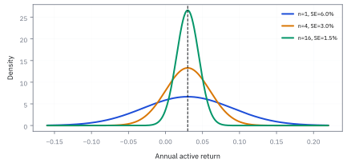
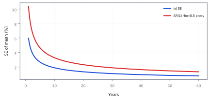

14.2 The Black–Scholes Formula
ราคา call คือค่าเฉลี่ยของ payoff ในโลกที่หุ้นโตเท่าดอกเบี้ย คิดลดกลับมาวันนี้ แยกเป็นขาหุ้นกับขา strike จึงได้สูตรสองพจน์
หุ้นราคา \$100 มี call strike \$105 อายุ 3 เดือน (0.25 ปี) ดอกเบี้ย 4% ต่อปี ความผันผวน 20% ต่อปี นักศึกษาฝึกงานคิดว่า ในโลกที่ใช้ตั้งราคา หุ้นโตเท่าดอกเบี้ย ราคาเฉลี่ยวันหมดอายุจึงเป็น $100e^{0.04\times0.25}=\$101.01$ ต่ำกว่า strike ราว \$4 call นี้ “เฉลี่ยแล้วไม่มีค่า” เขาจึงยอมขายที่ \$0.10 แต่การแก้ Black–Scholes PDE บนกริดได้ \$2.3909 ใครถูก และเงิน \$2.39 มาจากไหน
ลองตอบก่อนเปิดเฉลย
กริดถูก นักศึกษาเอาราคาเฉลี่ยใส่ลงใน payoff ซึ่งเท่ากับคิดว่าหุ้นไม่แกว่งเลย แต่ payoff ของ call ไม่เคยติดลบ เส้นทางที่จบต่ำกว่า \$105 ให้ศูนย์ ส่วนเส้นทางที่จบสูงกว่าให้เงินจริง หน้านี้จะคำนวณว่า 33.07% ของเส้นทาง (ภายใต้น้ำหนักที่ใช้ตั้งราคา) จบเหนือ \$105 และเมื่อจบเหนือ หุ้นอยู่ที่เฉลี่ย \$112.30 จ่ายเฉลี่ย \$7.30 ค่าเฉลี่ยของ payoff จึงเป็น $0.3307\times7.302=\$2.415$ คิดลดกลับมาวันนี้ได้ \$2.3909 การขายที่ \$0.10 คือแจกเงินราว \$2.29 ต่อหุ้น
ภาพรวมก่อนลงสูตร
การแก้ PDE บนกริดให้ตัวเลข แต่ไม่ให้สูตร หน้านี้หาสูตร โดยใช้ผลจาก Feynman–Kac: คำตอบของ PDE แบบนี้คือค่าเฉลี่ยของ payoff ที่คิดลดแล้ว เมื่อให้หุ้นโตในอัตรา $r$ แทน $\mu$ น้ำหนักแบบนี้เรียก risk-neutral และใช้ได้เพราะพอร์ตเลียนแบบไม่ขึ้นกับ $\mu$ อยู่แล้ว จะเลือก $\mu$ เท่าไรก็ได้ราคาเดียวกัน เราจึงเลือกค่าที่คำนวณง่ายที่สุด
รูปด้านล่างคือการกระจายตัวของราคาหุ้นวันหมดอายุภายใต้น้ำหนักนั้น ราคา call คือพื้นที่สีส้มทางขวาของ strike คูณด้วยระยะที่หุ้นเลย strike ไปโดยเฉลี่ย แล้วคิดลดกลับมา หน้านี้จะแยกงานนี้เป็นสองบัญชี “ได้หุ้น” กับ “จ่าย strike” คำนวณแต่ละบัญชีด้วยตาราง Normal จนได้สูตรที่กดเครื่องคิดเลขได้ แล้วตรวจด้วยขอบเขต ต้นไม้ binomial การสุ่ม และขยายไปหุ้นที่จ่ายปันผล
รูป — ราคาหุ้นวันหมดอายุภายใต้น้ำหนักตั้งราคา และส่วนที่ใช้สิทธิ์
ศัพท์ที่ใช้ในหัวข้อนี้
- Risk-neutral weights ($\mathbb Q$)
- การถ่วงน้ำหนักเส้นทางราคาแบบที่ให้หุ้นโตเฉลี่ยเท่าดอกเบี้ย ใช้เขียนราคาเป็นค่าเฉลี่ยคิดลด ใช้ได้เพราะต้นทุนพอร์ตเลียนแบบไม่ขึ้นกับ $\mu$ มันเป็นเครื่องมือคำนวณ ไม่ใช่คำทำนายว่าหุ้นจะไปทางไหน
- Forward price
- $F=S_0e^{rT}$ ราคาที่ตกลงวันนี้เพื่อซื้อหุ้นในวันหมดอายุ (มาจาก ต้นทุนการถือ: กู้เงินซื้อหุ้นวันนี้แล้วถือไว้) และเป็นค่าเฉลี่ยของ $S_T$ ภายใต้ $\mathbb Q$ จึงเป็นจุดกลางที่ strike ควรถูกเทียบด้วย ไม่ใช่ราคาหุ้นวันนี้
- Discount factor
- $e^{-rT}$ ตัวคูณที่แปลงเงินวันหมดอายุเป็นเงินวันนี้ ที่ 4% ต่อปีนาน 0.25 ปี เงิน \$1 วันหมดอายุมีค่า \$0.99005 วันนี้
- Indicator
- $\mathbf 1(S_T\gt K)$ มีค่า 1 เมื่อหุ้นจบเหนือ strike และ 0 เมื่อไม่ใช่ ใช้รวม payoff สองกรณีเป็นบรรทัดเดียว แล้วแยกเป็นสองบัญชี ค่าเฉลี่ยของมันคือโอกาสที่เหตุการณ์นั้นเกิด
- $\Phi$ กับ $\phi$
- $\Phi(x)$ คือ CDF ของ standard Normal คือพื้นที่ใต้ระฆังทางซ้ายของ $x$ ส่วน $\phi(x)$ คือความสูงของระฆังที่ $x$ ตัวแรกอยู่ในคำตอบ ตัวหลังใช้ระหว่างพิสูจน์ สลับกันเมื่อไรได้ตัวเลขผิดโดยไม่มีอะไรเตือน
- $d_1$ และ $d_2$
- ระยะสองตัวที่วัดเป็นจำนวนเท่าของ SD ของ log ราคาปลายทาง $d_2$ บอกว่าต้องสุ่มได้แรงแค่ไหนหุ้นจึงจบเหนือ strike ส่วน $d_1=d_2+\sigma\sqrt T$ เป็นตัวที่ถูกเลื่อนเมื่อนับเส้นทางหนักตามราคาหุ้น
- Dividend yield ($q$)
- อัตราปันผลที่สมมติว่าไหลออกจากหุ้นต่อเนื่องต่อปี ผู้ถือ call ไม่ได้ปันผลนี้ จึงต้องหักออกจากการโตของหุ้น ใช้กับดัชนีที่มีหุ้นหลายร้อยตัวจ่ายปันผลกระจายทั้งปี
สัญลักษณ์และหน่วย
| สัญลักษณ์ | ความหมาย | หน่วย |
|---|---|---|
| $S_0,\ S_T$ | ราคาหุ้นวันนี้ และวันหมดอายุ | ดอลลาร์ต่อหุ้น |
| $K,\ T$ | strike และอายุที่เหลือ | ดอลลาร์, ปี |
| $r,\ \sigma,\ q$ | ดอกเบี้ยต่อเนื่อง, ความผันผวน และ dividend yield ต่อเนื่อง | ต่อปี, ต่อรากที่สองของปี, ต่อปี |
| $Z$ | ก้อนสุ่ม standard Normal ก้อนเดียวที่กำหนด $S_T$ | ไม่มีหน่วย |
| $\mathbb Q,\ \mathbb E^{\mathbb Q}$ | น้ำหนักที่ใช้ตั้งราคา และค่าเฉลี่ยภายใต้น้ำหนักนั้น | ไม่มีหน่วย |
| $F$ | forward $S_0e^{rT}$ | ดอลลาร์ |
| $\Phi,\ \phi$ | CDF และ density ของ standard Normal | ไม่มีหน่วย |
| $d_1,\ d_2$ | ระยะที่วัดเป็นจำนวนเท่าของ $\sigma\sqrt T$ | ไม่มีหน่วย |
| $C,\ P$ | ราคา call และ put ต่อหุ้นอ้างอิงหนึ่งหุ้น | ดอลลาร์ |
ขั้นที่ 1 — ลองด้วยมือ: หุ้นปลายทางมีแค่สามราคา
โจทย์ให้อะไรมาบ้าง: หุ้นวันนี้ \$100 วันหมดอายุเป็นได้ \$90, \$100 หรือ \$120 น้ำหนักที่ใช้ตั้งราคาคือ 0.3, 0.4 และ 0.3 (สมมติ) เงิน \$1 วันนี้โตเป็น \$1.03 ตอนหมดอายุ หาราคา call strike \$105 และแยกเป็นสองบัญชี
คำตอบ: call ราคา \$4.3689 น้ำหนักชุดนี้ใช้ตั้งราคาได้เพราะค่าเฉลี่ยของหุ้นคือ 103 เท่ากับเงิน \$100 ที่ฝากไว้ หุ้นจึงโตเฉลี่ยเท่าดอกเบี้ยพอดี บัญชี “ได้หุ้น” มีเฉพาะเส้นทาง \$120 (36) และบัญชี “จ่าย strike” มีเฉพาะเส้นทางเดียวกัน (31.5) ลบกันได้ 4.5 เท่ากับค่าเฉลี่ยของ payoff
ตัวเลขสองตัวที่ต้องจำไว้: 0.3 คือโอกาสได้ใช้สิทธิ์ภายใต้น้ำหนักนี้ ซึ่งจะกลายเป็น $\Phi(d_2)$ และ $36/103=0.3495$ คือสัดส่วนของค่าเฉลี่ยหุ้นที่มาจากเส้นทางที่ใช้สิทธิ์ ซึ่งจะกลายเป็น $\Phi(d_1)$ ตัวหลังสูงกว่าเพราะเส้นทางที่ใช้สิทธิ์คือเส้นทางที่หุ้นราคาสูง ถ้าถ่วงทุกเส้นทางด้วยราคาหุ้นของมัน น้ำหนักจะไหลไปทางราคาสูง ดังรูปด้านล่าง
ตรวจเองใน 10 วินาที: $0.3(15)=4.5=36-31.5$ และถ้าเอาค่าเฉลี่ย 103 ใส่ payoff จะได้ $(103-105)^+=0$ ราคาศูนย์แบบที่นักศึกษาในโจทย์เปิดเรื่องคิด ทั้งที่ของจริงคือ \$4.37
รูป — น้ำหนักตั้งราคา กับน้ำหนักที่ถ่วงด้วยราคาหุ้น
ขั้นที่ 2 — หุ้นปลายทางเขียนด้วยก้อนสุ่มก้อนเดียว
ในโลกจริงหุ้นปลายทางมีได้ทุกค่า เราจึงต้องมีสูตรของ $S_T$ ก่อน ใช้ของที่มีแล้วสามอย่าง: คำตอบของ GBM, การขยับของ Brownian motion ตลอดช่วง $T$ เป็น Normal ที่มี SD $\sqrt T$ จึงเขียนเป็น $\sqrt T\,Z$ ได้ และภายใต้น้ำหนักตั้งราคา drift $\mu$ กลายเป็น $r$ บรรทัดที่เหลือตรวจว่าค่าเฉลี่ยของ $S_T$ เป็น forward จริง ด้วยสูตร $\mathbb E[e^{aZ}]=e^{a^2/2}$ ของ lognormal
มีก้อนสุ่ม $Z$ ก้อนเดียว ทุกคำถามเรื่อง $S_T$ จึงกลายเป็นคำถามเรื่อง $Z$ ซึ่งมีตาราง ส่วน $-\tfrac12\sigma^2T$ ในเลขชี้กำลังมีไว้ชดเชย: exponential ของก้อนสุ่มดันค่าเฉลี่ยขึ้น $e^{\sigma^2T/2}$ เท่า (ความนูนของ exponential) สองตัวนี้หักกันพอดี ค่าเฉลี่ยจึงออกมาเป็น $F$
บรรทัดสุดท้ายคือค่ากลางของ $S_T$ (ตอน $Z=0$) ซึ่งเป็น median \$100.50 ต่ำกว่าค่าเฉลี่ย \$101.01 เพราะ lognormal เบ้ขวา ครึ่งหนึ่งของเส้นทางจบต่ำกว่า \$100.50 แต่เส้นทางที่ขึ้นแรงดึงค่าเฉลี่ยขึ้นไป ดูได้จากรูประฆังด้านบนที่หางขวายาวกว่าหางซ้าย
ขั้นที่ 3 — ราคาคือค่าเฉลี่ยคิดลด แล้วแยก payoff เป็นสองบัญชี
คำตอบของ PDE ที่มีเงื่อนไขปลายทางเป็น payoff คือค่าเฉลี่ยของ payoff ภายใต้ $\mathbb Q$ คูณ discount factor เขียนเป็น integral กับ density ได้ตรง ๆ จากนั้นใช้ indicator รวม payoff สองกรณีเป็นบรรทัดเดียวแล้วกระจาย แบบที่ทำด้วยมือในโลกสามราคา
บรรทัดที่สองคือรูปทรงพื้นที่ในรูปภาพรวม: $f$ คือ density ของ $S_T$ และ integral เริ่มที่ $K$ เพราะทางซ้ายของ strike payoff เป็นศูนย์ ถ้ามี density เป็นสูตร จะคำนวณ integral นี้ด้วย trapezoid rule ก็ได้ (ซอยช่วงเป็นชิ้นเล็ก ๆ แล้วรวมพื้นที่สี่เหลี่ยมคางหมู) แต่ทางที่ได้สูตรปิดคือแยกเป็นสองบัญชี
บรรทัดที่สามใช้ว่า indicator เป็น 1 เมื่อใช้สิทธิ์และเป็น 0 เมื่อไม่ใช้ คูณแล้วจึงได้ $S_T-K$ หรือ 0 ตรงกับ payoff ทั้งสองกรณี บรรทัดที่สี่ใช้ว่าค่าเฉลี่ยของ indicator คือ 1 คูณโอกาสที่เกิด บวก 0 คูณโอกาสที่ไม่เกิด ขา strike คูณด้วย $K$ คงที่ จึงเหลือแค่โอกาส ส่วนขาหุ้นมี $S_T$ สุ่มอยู่ข้างใน เส้นทางที่หุ้นสูงจึงนับหนักกว่า สองบัญชีจึงต้องคำนวณคนละแบบ
ขั้นที่ 4 — ขา strike: เงื่อนไขใช้สิทธิ์กลายเป็นเกณฑ์ของ Z
เรารู้ distribution ของ $Z$ แต่เงื่อนไข $S_T\gt K$ เขียนอยู่ในภาษาของราคา จึงต้องแปลงอสมการข้ามไป ใส่ log สองข้างได้โดยเครื่องหมายไม่พลิก เพราะ log เพิ่มขึ้นเสมอและราคาเป็นบวก แล้วหารด้วย $\sigma\sqrt T$ ที่เป็นบวก ตัวเลขใช้โจทย์เปิดเรื่อง
$z^*$ อ่านได้ตรง ๆ: log ของหุ้นต้องขึ้นจาก $\ln100$ ถึง $\ln105$ คือ 0.048790 แต่ค่ากลางของมันขึ้นแค่ $(0.04-0.02)(0.25)=0.005$ ส่วนที่ขาด 0.043790 หารด้วย SD ของ log ตลอด 3 เดือน $0.20\sqrt{0.25}=0.10$ ได้ 0.4379 SD เหมือน z-score ของ Normal distribution
บรรทัดที่ห้าใช้ความสมมาตรของระฆัง: พื้นที่ทางขวาของ $-d_2$ เท่ากับพื้นที่ทางซ้ายของ $d_2$ เราตั้งชื่อ $d_2$ ให้เป็นค่าลบของเกณฑ์ ก็เพื่อให้คำตอบเขียนเป็น $\Phi(d_2)$ ได้สั้น ๆ
รูป — เส้นทางที่ใช้สิทธิ์คือหางขวาของ Z

ขั้นที่ 5 — ขาหุ้น: จัดกำลังสองสมบูรณ์ แล้ว d₁ ก็โผล่มา
ขาหุ้นมี $S_T$ คูณอยู่ใน integral ทำให้ข้างในเป็น $e^{\sigma\sqrt T z}\phi(z)$ ซึ่งไม่ใช่ density มาตรฐาน กลเม็ดคือรวมเลขชี้กำลังสองก้อนแล้วจัดกำลังสองสมบูรณ์ วิธีเดียวกับที่ใช้หาค่าเฉลี่ยของ lognormal ขอบล่างของ integral คือเกณฑ์ $-d_2$ ที่เพิ่งได้
สองบรรทัดแรกตรวจได้ด้วยการกระจายกลับ: $-\tfrac12(z^2-2\sigma\sqrt T z+\sigma^2T)+\tfrac12\sigma^2T$ เหลือ $\sigma\sqrt T z-\tfrac12z^2$ บรรทัดที่สองจึงบอกว่าการถ่วงด้วยราคาหุ้นไม่ทำลายรูประฆัง แค่เลื่อนจุดกลางไป $\sigma\sqrt T$ แล้วทิ้งตัวคูณ $e^{\sigma^2T/2}$ ไว้ ซึ่งรวมกับ $e^{(r-\sigma^2/2)T}$ ได้ $e^{rT}$ พอดี
บรรทัดรองสุดท้ายเปลี่ยนตัวแปรเป็น $u=z-\sigma\sqrt T$ ขอบล่างจึงเลื่อนตาม แล้วใช้ความสมมาตรของระฆังแบบขา strike ตัวเลขตรวจได้: ที่ $z=0.7$ และ $\sigma\sqrt T=0.1$ สองข้างของบรรทัดที่สองเท่ากันที่ 0.334895 นี่คือที่มาเดียวของ $d_1$ มันคือ $d_2$ ที่ถูกเลื่อนเพราะนับเส้นทางหนักตามราคาหุ้น เหมือนแท่งส้มในโลกสามราคาที่เอียงไปทางราคาสูง
รูป — ถ่วงด้วยราคาหุ้นแล้วระฆังเลื่อนขวาไป σ√T
ขั้นที่ 6 — ประกอบเป็นสูตร call และ put
แทนผลของขา strike และขาหุ้นลงในสองบัญชี แล้วทำซ้ำกับ put ซึ่ง payoff คือ $(K-S_T)^+=K\,\mathbf 1(S_T\lt K)-S_T\mathbf 1(S_T\lt K)$ เหตุการณ์ตรงข้ามคือพื้นที่อีกฝั่งของเกณฑ์เดิม จึงได้ $\Phi(-d)$ แทน $\Phi(d)$ โดยไม่ต้องคำนวณ integral ใหม่
บรรทัดที่สองใช้ $Fe^{-rT}=S_0$ ขาหุ้นจึงกลายเป็นราคาหุ้นวันนี้ ส่วนขา strike ยังคิดลดอยู่เพราะ strike จ่ายตอนหมดอายุ อ่านสูตรเป็นพอร์ตได้ทันที: ถือหุ้น $\Phi(d_1)$ หุ้น และกู้ $Ke^{-rT}\Phi(d_2)$ ซึ่งคือ พอร์ตเลียนแบบ ตัวเดิม ส่วน the Greeks จะพิสูจน์ว่าความชันของ call เท่ากับ $\Phi(d_1)$ ทุกจุด สังเกตว่า $\mu$ ไม่อยู่ในสูตรเลย เช่นเดียวกับที่โอกาสจริงไม่อยู่ในการตั้งราคาบนต้นไม้
สองบรรทัดสุดท้ายใช้ $\Phi(x)+\Phi(-x)=1$ ผลคือ put–call parity ซึ่งที่นี่ได้มาจากสูตร แต่หน้า put–call parity จะพิสูจน์ใหม่โดยไม่ใช้แบบจำลองเลย จึงใช้ตรวจราคาจากตลาดได้
ขั้นที่ 7 — แทนตัวเลขของ call \$105
โจทย์ให้อะไรมาบ้าง: $S_0=100$, $K=105$, $T=0.25$, $r=0.04$, $\sigma=0.20$ ไม่มีปันผล ทำตามลำดับของการพิสูจน์: $d_2$ ก่อน แล้ว $d_1$ แล้วสองขา
คำตอบ: call \$2.390877 ต่อหุ้น ตรงกับกริดของ PDE (2.390636 ที่ระยะกริด \$0.25 ห่างกัน 0.000241) และสองขาคือ \$36.7719 กับ \$34.3810 ซึ่งเป็นขาหุ้นและเงินกู้ของพอร์ตเลียนแบบพอดี put \$6.346110 ต่อสัญญา 100 หุ้น call เป็น \$239.09 และ put เป็น \$634.61
ตรวจเองใน 10 วินาที: ตาราง Normal ให้ $\Phi(0.33)=0.6293$ และ $\Phi(0.34)=0.6331$ ประมาณเชิงเส้นที่ 0.3379 ได้ $0.6293+0.79(0.0038)=0.6323$ จึงได้ $\Phi(d_1)=1-0.6323=0.3677$ และ $C-P=2.3909-6.3461=-3.9552=100-103.9552$
รูป — ราคา call ก่อนหมดอายุอยู่เหนือ payoff เสมอ

รูป — put แบบ European อาจมีค่าต่ำกว่า payoff
ขั้นที่ 8 — อ่าน Φ(d₂) และ Φ(d₁) ให้ถูก แล้วตอบโจทย์เปิดเรื่อง
โจทย์ให้อะไรมาบ้าง: ค่าที่เพิ่งแทนได้ และ forward $F=101.0050$ หารสองบัญชีด้วยโอกาสใช้สิทธิ์ เพื่อได้ค่าเฉลี่ยเฉพาะเส้นทางที่ใช้สิทธิ์ แล้วเทียบกับโอกาสในโลกจริงถ้าหุ้นโต $\mu=12\%$ ต่อปี
คำตอบ: ภายใต้ $\mathbb Q$ 33.07% ของเส้นทางจบเหนือ \$105 เมื่อจบเหนือ หุ้นอยู่เฉลี่ย \$112.30 จ่ายเฉลี่ย \$7.30 คูณกันได้ค่าเฉลี่ยของ payoff \$2.4149 คิดลดได้ \$2.3909 ตอบโจทย์เปิดเรื่องครบ ส่วน $\Phi(d_1)=36.77\%$ ไม่ใช่โอกาส มันคือสัดส่วนของ forward ที่มาจากเส้นทางที่ใช้สิทธิ์ ($101.005\times0.3677=37.14$ จาก 101.005) เหมือน $36/103$ ในโลกสามราคา และคือจำนวนหุ้นที่ hedge
ตรวจเองใน 10 วินาที: บรรทัด $d_2^{\rm real}$ ใช้ $\mu-\tfrac12\sigma^2=0.12-0.02=0.10$ แทน $r-\tfrac12\sigma^2$ ถ้าหุ้นโตจริง 12% ต่อปี โอกาสจริงที่จะจบเหนือ \$105 คือ 40.60% ไม่ใช่ 33.07% ตัวเลข $\Phi(d_2)$ จึงเป็นน้ำหนักสำหรับตั้งราคา ไม่ใช่คำทำนาย และราคาไม่เปลี่ยนตาม 40.60% เพราะต้นทุน hedge ไม่ขึ้นกับ $\mu$
รูป — Φ(d₁) อยู่เหนือ Φ(d₂) ทุกราคาหุ้น

ขั้นที่ 9 — ตรวจโดยไม่ต้องเชื่อสูตร: ขอบเขต และความผันผวนที่ปลายสุด
ก่อนใช้ราคาใด ๆ ให้ตรวจสองอย่างที่ไม่ขึ้นกับแบบจำลอง: payoff ของ call ไม่เกิน $S_T$ ราคาจึงไม่เกินหุ้น และ payoff ไม่ต่ำกว่า $S_T-K$ ซึ่งวันนี้มีค่า $S_0-Ke^{-rT}$ และไม่ต่ำกว่าศูนย์ จากนั้นดูว่าสูตรไปที่ไหนเมื่อความผันผวนเข้าใกล้ศูนย์และโตไม่จำกัด
เมื่อ $\sigma\to0$ ทั้ง $d_1$ และ $d_2$ วิ่งไป $-\infty$ เพราะ $F=101.005$ ต่ำกว่า $K=105$ สองขาจึงหายหมด ราคาศูนย์นี้คือสิ่งที่นักศึกษาในโจทย์เปิดเรื่องคำนวณ การเอาค่าเฉลี่ยใส่ payoff คือการตั้งราคาในโลกที่ไม่มีความผันผวน ราคา call ทุกเซนต์ที่เหนือศูนย์จึงเป็นราคาของความผันผวน
เมื่อ $\sigma\to\infty$ ได้ $d_1\to+\infty$ และ $d_2\to-\infty$ ราคาเข้าหาหุ้นทั้งตัว แต่ช้ามาก ที่ 400% ยังได้แค่ \$67.65 ระหว่าง 20% ถึง 40% ราคาขึ้นราว \$1.9 ต่อความผันผวน 10 จุด ความไวนี้ชื่อ vega ซึ่งเป็นหนึ่งใน the Greeks ราคาที่เพิ่มขึ้นตามความผันผวนเสมอแบบนี้ ทำให้ทุกราคาตลาดย้อนกลับไปหาความผันผวนได้ค่าเดียว ซึ่งคือ implied volatility
รูป — ความผันผวนมากขึ้น call แพงขึ้น แต่ไม่เกินราคาหุ้น

ขั้นที่ 10 — ตรวจด้วยสองวิธีที่ไม่ใช้พีชคณิต: ต้นไม้ binomial และการสุ่ม
โจทย์ให้อะไรมาบ้าง: วิธีแรกคือต้นไม้ binomial $n$ งวด ตั้ง $u=e^{\sigma\sqrt{T/n}}$, $d=1/u$, $R=e^{rT/n}$ แล้วไล่ถอยหลังแบบพอร์ตเลียนแบบ ราคาต้นไม้เขียนเป็นผลรวมได้ และแยกเป็นขาหุ้นกับขา strike แบบเดียวกับสูตร ($\eta$ คือจำนวนครั้งขึ้นน้อยที่สุดที่ทำให้หุ้นจบเหนือ strike) วิธีที่สองคือสุ่ม $Z$ 200,000 ตัว (mulberry32 seed 2024 กับ Box–Muller) สร้าง $S_T$ ด้วยสูตรของหุ้นปลายทาง แล้วเฉลี่ย payoff คิดลด
คำตอบ: ต้นไม้เข้าหา \$2.3909 เมื่อจำนวนงวดเพิ่ม (ห่าง 0.0329 ที่ 10 งวด, 0.0079 ที่ 100 งวด, 0.0005 ที่ 1,000 งวด) ผลรวมตัวที่สองหารด้วย $R^n$ คือโอกาสใช้สิทธิ์ในต้นไม้ ซึ่งเข้าหา $\Phi(d_2)$ ส่วนการสุ่มห่างสูตร 1.25 เท่าของ standard error และสัดส่วนเส้นทางที่จบเหนือ \$105 คือ 0.3291 เทียบ $\Phi(d_2)=0.3307$ ห่าง 1.59 เท่าของ $\sqrt{0.3307(0.6693)/200{,}000}=0.00105$ ทั้งสองวิธีอยู่ในระยะคลาดปกติ สูตรจึงผ่านการตรวจที่ไม่ได้ใช้พีชคณิตของสองบัญชีเลย
ตรวจเองใน 10 วินาที: การสุ่ม 200,000 เส้นทางให้ความแม่นแค่ ±0.011 ขณะที่สูตรให้ 2.390877 ทันที ถ้าอยากได้ SE 0.001 ต้องใช้ราว $(0.0109/0.001)^2\times200{,}000=24$ ล้านเส้นทาง การสุ่มจึงมีไว้สำหรับสัญญาที่ไม่มีสูตรปิด (ดู Monte Carlo) ส่วนต้นไม้มีไว้สำหรับ option ที่ใช้สิทธิ์ก่อนได้
รูป — ราคาจากต้นไม้แกว่งเข้าหาสูตรเมื่อซอยงวดถี่ขึ้น
ขั้นที่ 11 — หุ้นที่จ่ายปันผล: หักปันผลออกจากการโตของหุ้น
ดัชนีอย่าง S&P 500 จ่ายปันผลตลอดปี ผู้ถือ call ไม่ได้ปันผลนั้น จึงสมมติให้ปันผลไหลออกต่อเนื่องอัตรา $q$ ต่อปี ผลตอบแทนรวมของหุ้นภายใต้ $\mathbb Q$ ยังเท่าดอกเบี้ย $r$ แต่ส่วนหนึ่ง $q$ ออกมาเป็นเงินปันผล ราคาหุ้นจึงโตแค่ $r-q$ ทุกอย่างที่ผ่านมาใช้ได้เหมือนเดิม แค่เปลี่ยนการโตของหุ้น ส่วนการคิดลดยังใช้ $r$ (รายละเอียดปันผลแบบก้อนอยู่ที่ ปันผลในสูตรราคา)
ที่ $q=2\%$ ส่วน $(r-q-\tfrac12\sigma^2)T$ เป็น $(0.04-0.02-0.02)(0.25)=0$ พอดี ตัวเศษของ $d_2$ จึงเหลือแค่ log ของ $S_0/K$ ส่วน $e^{-qT}$ หน้าขาหุ้นมีความหมายตรง ๆ: ซื้อหุ้นวันนี้แค่ $e^{-0.005}=0.9950$ หุ้น แล้วเอาปันผลซื้อหุ้นเพิ่มไปเรื่อย ๆ จะมีครบหนึ่งหุ้นพอดีในวันหมดอายุ
บรรทัด parity มีปันผลได้มาจากการประกอบสูตรแบบเดิม ปันผล 2% ทำให้ forward ลดจาก 101.005 เหลือ 100.501 call จึงถูกลง \$0.1787 และ put แพงขึ้น \$0.3200 อีกตัวอย่างหนึ่ง: หุ้น \$100, strike \$80, อายุ 1 ปี, ดอกเบี้ย 5%, ปันผล 1%, ความผันผวน 30% ได้ $d_2=0.7271$, $d_1=1.0271$ และ call \$25.6146 ซึ่งตรงกับการคำนวณ integral ของขั้นสองบัญชีด้วย trapezoid rule ช่องละ \$0.20 จำนวน 4,096 ช่อง (ได้ 25.6146 เช่นกัน)
ความผิดที่ให้ตัวเลขผิดโดยไม่มีอะไรเตือน
ใช้ $\Phi(d_2)$ ทั้งสองขา: จะได้ $(S_0-Ke^{-rT})\Phi(d_2)=(100-103.9552)(0.3307)=-1.3081$ ราคาติดลบซึ่งเป็นไปไม่ได้ ขาหุ้นต้องใช้ $\Phi(d_1)$ เพราะนับเส้นทางหนักตามราคาหุ้น
ใส่หน่วยผิด: อายุ 3 เดือนต้องเป็น 0.25 ปี ถ้าใส่ 3 ในตัวอย่าง call \$36 บนหุ้น \$35 (โจทย์ข้อแรกด้านล่าง) จะได้ \$6.2371 แพงเกินจริง 4.74 เท่า ถ้าใส่ความผันผวน 24 แทน 0.24 ราคาจะชนเพดานเกือบ \$35 เต็ม และถ้าใส่อายุ 90 (วัน) แทน 0.25 ปี call \$105 จะมีราคา \$97.40 สูตรไม่ร้องเตือนเอง โค้ดท้ายหน้าจึงปฏิเสธความผันผวนเกิน 5 (500%) และอายุเกิน 30 ปี
ลืมปันผล: ตั้งราคา call บนดัชนีที่จ่ายปันผล 2% โดยใส่ $q=0$ จะได้ \$2.3909 แทน \$2.2121 แพงเกินไป 8.1% และ put ถูกเกินไป \$0.32 ทั้งคู่ผ่านขอบเขตได้สบาย ความผิดนี้จึงหลุดไปถึงใบเสนอราคาได้
เชื่อว่า GBM คือหุ้นจริง: สูตรสมมติว่าหุ้นไม่กระโดด หางของผลตอบแทนบางแบบ Normal และความผันผวนคงที่ หุ้นจริงไม่เป็นแบบนั้นและทุกโต๊ะรู้ดี ถ้าใช้ความผันผวนเดียวกับทุก strike put ที่ strike ต่ำจะถูกเกินไป ตลาดแก้ด้วยการใส่ความผันผวนคนละค่าให้แต่ละ strike ซึ่งคือ volatility smile
ใช้ทำอะไรบนโต๊ะจริง
บนโต๊ะไม่มีใครใช้สูตรนี้ทำนายว่าราคา option ควรเป็นเท่าไร เพราะราคาอยู่บนจออยู่แล้ว ที่ใช้จริงคือเดินย้อน: ใส่ราคาตลาดแล้วแก้หาความผันผวนที่ทำให้สูตรตรงกับราคานั้น ได้ implied volatility ซึ่งเทียบข้าม strike ข้ามอายุ และข้ามหุ้นได้ ขณะที่ราคาดิบเทียบกันไม่ได้ เทรดเดอร์จึงเสนอราคากันเป็น “vol” ไม่ใช่เป็นดอลลาร์ คนในวงการเรียกการใช้แบบนี้ว่า “ใส่ตัวเลขผิดลงในสูตรผิด เพื่อให้ได้ราคาที่ถูก”
สูตรยังเป็นใบสั่งงานของโต๊ะ hedge: ถือ $\Phi(d_1)$ หุ้นต่อ call และกู้ $Ke^{-rT}\Phi(d_2)$ ส่วนการคูณตัวคูณสัญญา 100 หุ้นทำตอนท้ายเสมอ ไม่ใส่ไว้กลางสูตร call \$2.3909 ต่อหุ้นจึงเป็น \$239.09 ต่อสัญญา
โจทย์ตรวจความเข้าใจ
1. ตัวอย่างที่สอง ซึ่ง the Greeks จะใช้ต่อ: หุ้น \$35, strike \$36, อายุ 3 เดือน, ดอกเบี้ย 2% ต่อปี, ความผันผวน 24% ต่อปี ไม่มีปันผล หาราคา call และ put
เฉลย
$\ln(35/36)=-0.0281709$, $(r-\tfrac12\sigma^2)T=(0.02-0.0288)(0.25)=-0.0022$, $\sigma\sqrt T=0.12$ จึงได้ $d_2=(-0.0281709-0.0022)/0.12=-0.2530906$ และ $d_1=-0.1330906$ ตาราง Normal ให้ $\Phi(d_1)=0.4470608$, $\Phi(d_2)=0.4000991$ และ $Ke^{-rT}=36e^{-0.005}=35.820449$ call $=35(0.4470608)-35.820449(0.4000991)=15.647130-14.331729=\$1.315401$ ทั้งหมดเป็นค่าเวลา เพราะวันนี้หุ้นต่ำกว่า strike \$1 แต่ SD ของ log ราคาตลอด 3 เดือนคือ 12% หรือราว \$4.20 บนหุ้น \$35 put ด้วย parity $=1.315401-35+35.820449=\$2.135850$ ตรวจด้วยสูตรตรง $35.820449(0.5999009)-35(0.5529392)=21.488720-19.352871=\$2.135850$ ตรงกัน
2. ตั้ง strike เท่ากับ forward พอดี $K=F=101.005$ ในโจทย์เปิดเรื่อง หา $d_1$, $d_2$ และราคา call แล้วเทียบกับสูตรลัด $C\approx0.4\,S_0\sigma\sqrt T$
เฉลย
$\ln(S_0/F)=-rT$ หักกับ $rT$ ในตัวเศษ จึงเหลือ $d_1=\tfrac12\sigma\sqrt T=0.05$ และ $d_2=-0.05$ ราคา $=S_0\Phi(0.05)-Fe^{-rT}\Phi(-0.05)=100[\Phi(0.05)-\Phi(-0.05)]=100(0.039878)=\$3.9878$ สูตรลัดให้ $0.4(100)(0.10)=\$4.00$ ใกล้มาก เพราะเมื่อ $d$ เล็ก $\Phi(x)-\Phi(-x)\approx2x\phi(0)$ และ $\phi(0)=1/\sqrt{2\pi}=0.3989$
3. สัญญาหนึ่งจ่าย \$1 ถ้าหุ้นในโจทย์เปิดเรื่องจบเหนือ \$105 (digital call) อีกสัญญาจ่ายหุ้นหนึ่งหุ้นถ้าจบเหนือ \$105 แต่ละสัญญาราคาเท่าไร และประกอบเป็น call ได้อย่างไร
เฉลย
digital call คือขา strike หารด้วย $K$: $e^{-rT}\Phi(d_2)=0.9900498(0.3307288)=\$0.327438$ สัญญาที่จ่ายหุ้นคือขาหุ้น $S_0\Phi(d_1)=\$36.7719$ call คือสัญญาที่จ่ายหุ้น ลบ digital 105 ใบ: $36.7719-105(0.327438)=36.7719-34.3810=\$2.3909$ ตรงกับที่แทนตัวเลขไว้
คำนวณซ้ำด้วย JavaScript
เปิดดูโค้ด
// Black-Scholes from its two legs: toy, formula, bounds, limits, binomial tree, simulation, dividends.
const { abs, exp, log, sqrt, max, sin, cos, imul, PI } = Math;
function checkInputs(S, K, T, r, sigma, q = 0) {
if (![S, K, T, r, sigma, q].every(Number.isFinite)) throw new TypeError('Inputs must be finite numbers');
if (S <= 0 || K <= 0) throw new RangeError('Spot and strike must be positive');
if (T <= 0 || T > 30) throw new RangeError('Time to expiry must be in years, above 0 and at most 30 (0.25 = 3 months)');
if (sigma <= 0 || sigma > 5) throw new RangeError('Volatility must be per year, above 0 and at most 5 (0.20 = 20%)');
}
const phi = x => exp(-0.5 * x * x) / sqrt(2 * PI);
function Phi(x) { // normal CDF: series near the centre, continued fraction in the tails
const a = abs(x);
if (a <= 3) { let t = a, s = a; for (let n = 1; n < 200 && t > 1e-17 * s; n++) { t *= a * a / (2 * n + 1); s += t; }
return x >= 0 ? 0.5 + phi(a) * s : 0.5 - phi(a) * s; }
let f = a; for (let k = 120; k >= 1; k--) f = a + k / f;
return x >= 0 ? 1 - phi(a) / f : phi(a) / f;
}
function blackScholes(S, K, T, r, sigma, q = 0) { // d2 first: it is the exercise threshold
checkInputs(S, K, T, r, sigma, q);
const sT = sigma * sqrt(T), D = exp(-r * T), Dq = exp(-q * T);
const d2 = (log(S / K) + (r - q - 0.5 * sigma * sigma) * T) / sT, d1 = d2 + sT;
const stockLeg = S * Dq * Phi(d1), strikeLeg = K * D * Phi(d2);
return { d1, d2, Nd1: Phi(d1), Nd2: Phi(d2), stockLeg, strikeLeg, call: stockLeg - strikeLeg,
put: K * D * Phi(-d2) - S * Dq * Phi(-d1) };
}
function toy(prices, weights, K, growth) { // three prices at expiry: two accounts
const avg = f => prices.reduce((a, s, i) => a + weights[i] * f(s), 0);
const forward = avg(s => s), stock = avg(s => (s > K ? s : 0)), exercise = avg(s => (s > K ? 1 : 0));
return { forward, stock, strike: K * exercise, exercise, share: stock / forward, price: (stock - K * exercise) / growth };
}
function binomial(S, K, T, r, sigma, n) { // u = e^(sigma sqrt(T/n)), d = 1/u, march backwards
const h = T / n, u = exp(sigma * sqrt(h)), d = 1 / u, R = exp(r * h), q = (R - d) / (u - d);
let V = Array.from({ length: n + 1 }, (_, j) => max(S * u ** j * d ** (n - j) - K, 0));
for (let t = n - 1; t >= 0; t--) for (let j = 0; j <= t; j++) V[j] = (q * V[j + 1] + (1 - q) * V[j]) / R;
return V[0];
}
function trapezoid(S, K, T, r, sigma, q, eta, N) { // integrate (s - K) f(s) ds from K to K + N eta
const m = log(S) + (r - q - 0.5 * sigma * sigma) * T, v = sigma * sqrt(T);
const f = s => phi((log(s) - m) / v) / (s * v);
let sum = 0;
for (let j = 0; j <= N; j++) { const s = K + j * eta, w = (j === 0 || j === N) ? eta / 2 : eta; sum += (s - K) * f(s) * w; }
return exp(-r * T) * sum;
}
function normals(seed) { // mulberry32 + Box-Muller
let a = seed >>> 0, spare = null;
const u = () => { a = (a + 0x6D2B79F5) >>> 0; let t = imul(a ^ (a >>> 15), a | 1);
t ^= t + imul(t ^ (t >>> 7), t | 61); return (((t ^ (t >>> 14)) >>> 0) + 0.5) / 4294967296; };
return () => { if (spare !== null) { const z = spare; spare = null; return z; }
const rad = sqrt(-2 * log(u())), ang = 2 * PI * u(); spare = rad * sin(ang); return rad * cos(ang); };
}
function monteCarlo(S, K, T, r, sigma, n, seed) {
const z = normals(seed), drift = (r - 0.5 * sigma * sigma) * T, sT = sigma * sqrt(T), D = exp(-r * T);
let sum = 0, sum2 = 0, hits = 0, sumS = 0;
for (let i = 0; i < n; i++) { const ST = S * exp(drift + sT * z()), pay = max(ST - K, 0);
sum += pay; sum2 += pay * pay; sumS += ST; if (ST > K) hits++; }
const mean = sum / n, sd = sqrt((sum2 - n * mean * mean) / (n - 1));
return { n, price: D * mean, se: D * sd / sqrt(n), exercised: hits / n, meanST: sumS / n };
}
const S = 100, K = 105, T = 0.25, r = 0.04, sigma = 0.2;
const main = blackScholes(S, K, T, r, sigma), F = S * exp(r * T), D = exp(-r * T);
const mc = monteCarlo(S, K, T, r, sigma, 200000, 2024), second = blackScholes(35, 36, 0.25, 0.02, 0.24);
console.log(JSON.stringify({
toy: toy([90, 100, 120], [0.3, 0.4, 0.3], 105, 1.03), forward: F, median: S * exp((r - 0.5 * sigma * sigma) * T), main,
parity: { callMinusPut: main.call - main.put, spotMinusPVStrike: S - K * D },
givenExercise: { spot: F * main.Nd1 / main.Nd2, payoff: main.call / D / main.Nd2 },
realWorld: Phi((log(S / K) + (0.12 - 0.5 * sigma * sigma) * T) / (sigma * sqrt(T))),
volSweep: [0.1, 0.2, 0.4, 1.2, 4].map(v => [v, blackScholes(S, K, T, r, v).call]),
tree: [1, 3, 10, 100, 1000].map(n => [n, binomial(S, K, T, r, sigma, n)]),
mc, mcZ: (mc.price - main.call) / mc.se,
dividend: blackScholes(S, K, T, r, sigma, 0.02),
dividend2: { formula: blackScholes(100, 80, 1, 0.05, 0.3, 0.01).call, trapezoid: trapezoid(100, 80, 1, 0.05, 0.3, 0.01, 0.2, 4096) },
second, bothLegsD2: (S - K * D) * main.Nd2, threeYears: blackScholes(35, 36, 3, 0.02, 0.24).call,
atmf: blackScholes(S, F, T, r, sigma).call, digital: D * main.Nd2
}, null, 1));สิ่งที่ควรตอบได้หลังอ่าน
- ราคา call คือ $e^{-rT}\mathbb E^{\mathbb Q}[(S_T-K)^+]$ แยกเป็นขาหุ้นกับขา strike ได้ $C=S_0\Phi(d_1)-Ke^{-rT}\Phi(d_2)$ และ put ได้จากพื้นที่อีกฝั่งของเกณฑ์เดียวกัน
- $d_2$ มาจากการแปลงเงื่อนไข $S_T\gt K$ เป็น $Z\gt-d_2$ ส่วน $d_1=d_2+\sigma\sqrt T$ มาจากการจัดกำลังสองสมบูรณ์เมื่อถ่วงด้วยราคาหุ้น
- call \$105 บนหุ้น \$100 อายุ 3 เดือน: \$2.3909 และ put \$6.3461 ตรงกับกริดของ PDE ต้นไม้ 1,000 งวด และการสุ่ม 200,000 เส้นทาง
- $\Phi(d_2)=33.07\%$ คือโอกาสใช้สิทธิ์ภายใต้ $\mathbb Q$ ไม่ใช่โอกาสจริง (40.60% ถ้าหุ้นโต 12%) ส่วน $\Phi(d_1)=36.77\%$ คือจำนวนหุ้นที่ hedge
- put แบบ European มีค่าต่ำกว่า payoff ได้เมื่อหุ้นต่ำมาก เพราะต้องรอรับ strike และเสียดอกเบี้ย
- ตรวจทุกราคาด้วยขอบเขต parity และหน่วย: ปี ไม่ใช่เดือนหรือวัน และความผันผวน 0.20 ไม่ใช่ 20
หน้าถัดไป the Greeks จะหาอนุพันธ์ของสูตรนี้เทียบราคาหุ้น เวลา ความผันผวน และดอกเบี้ย ซึ่งโต๊ะใช้ควบคุมความเสี่ยงทุกวัน และจะพิสูจน์ว่าความชันของ call คือ $\Phi(d_1)$ จริง